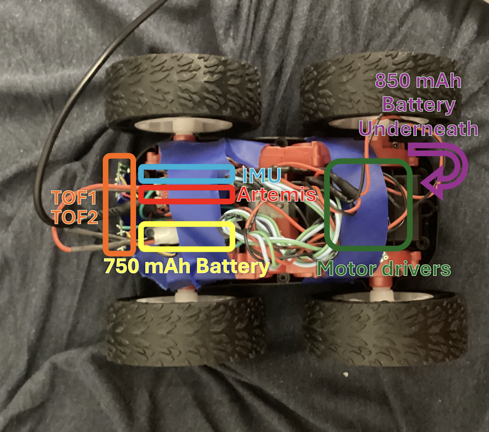

Lab 4: Motors and Open Loop Control
Prelab
Motor Driver Wiring
Each dual motor driver has two H-bridge channels, but they're not very strong. Since we need more current, both channels on each driver are parallel-coupled with inputs tied together and outputs tied together. You can double the current without overheating because they're on the same clock on the IC. Motor 2 (pictured on the right, will be on left) is controlled by pins 4 (forward) and A5 (reverse). Motor 1 (pictured left, will be on the right) uses pins A1 (forward) and A2 (reverse). These were chosen because they are all PWM-capable (I checked this time!) and easy to keep track of.

Separate Batteries
The Artemis and the motors are powered from separate batteries so the motor isn't underpowered. Motors draw large, sudden currents when starting or stalling, which causes voltage drops that could reset the Artemis or brown it out. All grounds are tied together for common reference.
Lab Tasks
Power Supply and Oscilloscope Setup
AnalogWrite was used to generate PWM signals for the driver, with an oscilloscope connected. The external power supply was set to 3.7V, the same voltage as the 850mAh battery, for safety
Due to limited lab time, I used the oscilloscope on the motor drivers during this step, but then wired everything up all at once as shown in my diagram and left. The single and dual motor tests below were done in code with battery power rather than a bench supply.

The following snippet is the analogWrite code used to test the motor drivers:
void loop() {
analogWrite(4, 100);
delay(3000);
}
Single Motor — Both Directions
With the car on its side and wheels elevated, the motor was tested in both forward and reverse.
analogWrite(MOTA_FWD, 128);
analogWrite(MOTA_REV, 0);
delay(3000);
analogWrite(MOTA_FWD, 0);
analogWrite(MOTA_REV, 0);
delay(1000);
analogWrite(MOTA_FWD, 0);
analogWrite(MOTA_REV, 128);Video: Single motor spinning forward and reverse with car on its side.
Both Motors — Battery Powered
The code runs both motors forward, then reverse, then spins in each direction to confirm independent control.
Video: Both wheels spinning with 850mAh battery powering the motor drivers.
Car Assembly
All components are 'installed' inside the chassis (apologies that everything is taped in place for now, a more permanent solution is in the works I promise). Motor drivers are taped near each motor to keep wire runs short and reduce EMI, with wires twisted together for that purpose. The Artemis and QWIIC breakout board sit on the other side in a tape bundle, and the 850mAh battery next to them. As required nothing sticks out past the wheels so the car can flip without damage. I would, however, not really trust it to flip.

Lower PWM Limit
The PWM was ramped up slowly while the car sat on the ground. Starting from rest required a slightly higher PWM than keeping the robot in motion, which makes sense since static friction is higher than kinetic friction. The lower limit was 60 for forward driving and 140 for on-axis turning.
Calibration and Straight Line
I tested for drift by running the robot along a line of tape. Hilariously, the calibration factor ended up being 1.0 anyway.

float CAL_FACTOR = 1.0;
int left_speed = (int)(BASE_SPEED * CAL_FACTOR);
int right_speed = BASE_SPEED;
drive(left_speed, right_speed);Video: Robot driving straight along tape line for 2m (measured in blue tape on the floor) after calibration.
Open Loop Control
I made a sequence loaded onto the Artemis: drive forward, turn right, drive forward, turn left, drive forward, turn again, then reverse. I put him infront of a wall to demnostrate the evasion behavior I was going for. It wasn't perfect though.
drive(50, 50); // fwd
delay(1500);
stop();
delay(300); // turn
drive(160, -160);
delay(1500);
stop();
delay(300); //fwd again
drive(50, 50);
delay(1500);
stop();
delay(300); // turn
drive(-160, 160);
delay(1500);
stop();
delay(300); //fwd
drive(50, 50);
delay(1500);
drive(170, -170); //stronger turn
delay(2000);
drive(-80, -80); // reverse
delay(1500);
stop();Video: Open loop untethered control demo showing forward driving, turns, and a spin.
Discussion
Collaborations: I used a soldering iron from my friend from outside of class and bought solder to use on it, which let me do a lot of last minute work. I also had instructional help from Rajarshi Das, mostly confirming my wiring questions. I used past diagrams from Brooke Hudson and Anunth Ramaswami to know how to create mine. As always, Claude to debug my code, explain some concepts, and help create the website html.